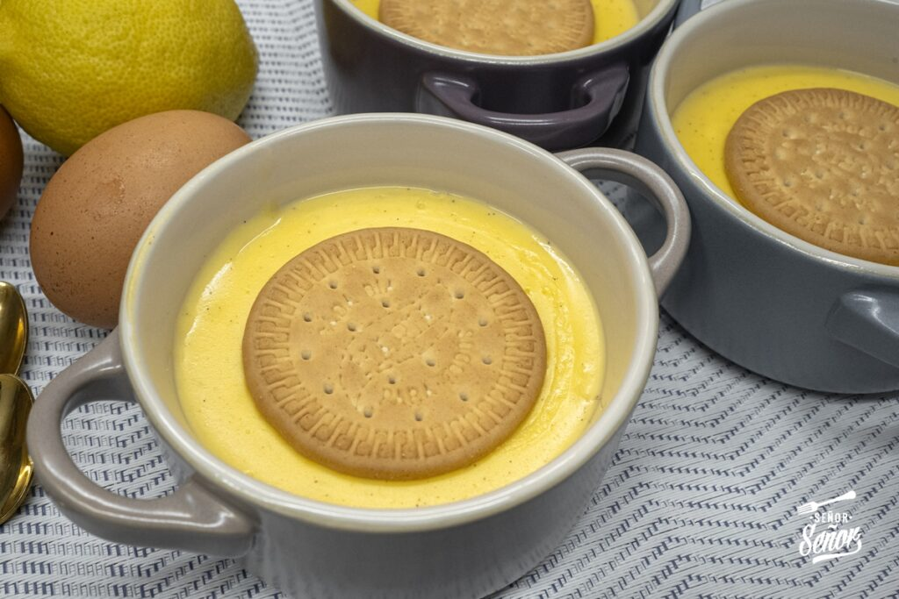

Ingredientes (4-6 personas)
| Producto | Cantidad |
|---|---|
| leche entera | 1 litro |
| yemas de huevo | 6 |
| azúcar | 150 gr |
| maicena | 40 gr |
| rama de canela | 1 |
| piel de limón | 1 tira |
| galletas María | 6 |
| canela molida (para decorar) | |

Elaboración
- Calienta 900 ml de leche en un cazo con la rama de canela y la piel de limón. Cuando empiece a hervir, retira del fuego y deja infusionar 10 minutos.
- Disuelve la maicena en los 100 ml de leche fría restantes, sin grumos.
- En un bol, mezcla las yemas con el azúcar y añade la leche con maicena.
- Retira la canela y la piel de limón de la leche caliente y vierte poco a poco la mezcla de yemas, removiendo sin parar.
- Cocina a fuego suave, removiendo constantemente con unas varillas, hasta que espese y la crema cubra el dorso de una cuchara (sin que llegue a hervir).
- Reparte las natillas en cuencos o cazuelitas individuales.
- Deja enfriar a temperatura ambiente y refrigera al menos 3 horas.
- Sirve frías con una galleta María en el centro y una pizca de canela molida.